User Guide for Sybase
Contents
User Guide for Sybase#
Introduction#
Aurreum Data Protection Suite (ADPS) provides the capability for the backup and restore of Sybase databases. This guide introduces how to properly use ADPS to back up and restore Sybase databases.
Features#
Feature |
Description |
|---|---|
Backup source |
Database (single, multiple) |
Backup type |
Full backup: Back up all data of one or more System databases or User databases. |
Backup target |
Standard storage pool, de-duplication storage pool, local storage pool, tape library pool, object storage service pool, LAN-Free pool |
Reconnection time |
The job continues after the abnormal reset occurs in the network within the set time. The default value is 10 minutes. If the network is completely disconnected, this feature does not take effect. |
Stop jobs |
Stop the backup and restore jobs. |
Multiple instances |
Support the backup and restore of multiple instances on a single host. |
Backup compression |
None, fast, tunable |
Channels |
A positive integer between 1-32. |
Backup schedule |
Immediate, one-time, minutely, hourly, daily, weekly, monthly |
Restore type |
Timepoint restore: Restore the database to the state of the most recent full backup first, and then use the backup logs to roll back the database to the specified point in time. For the database that has only run a full backup job, the timepoint restore can only restore it to the data state at the end of the backup job. |
Restore location |
Original path, custom path |
Restore target |
original instance, new instance |
Restore granularity |
Database (single) |
Restore to a different host |
Restoring to a different host requires the same version or from an old version to a new version. |
Pre/Post action |
The pre action is executed after the job starts and before the resource is backed up or restored. The post action is executed after the resource is backed up or restored. |
Speed limit |
Limit data transfer speed or disk read and write speed within different periods. |
Storage pool replication |
Replicate backup sets from the source storage pool to another pool. |
Restore from the target pool |
Restore backup sets from the target storage pool. |
D2C |
Back up data directly to object storage. |
D2T |
Back up data directly to tape library. |
LAN-Free |
Back up to and restore from LAN-Free storage pools. |
Modify the backup source and target |
Modify the backup source and backup target of a job. |
IPv6 |
Transfer and manage data over IPv6 network. |
Install and Configure Agent#
Verify Compatibility#
ADPS supports the backup and restore of Sybase standalone. Check whether the operating system (OS) and database version are supported before deploying the agent. Please refer to Compatibility List for the supported OS and database versions.
Compatibility List#
Standalone#
Database Version |
Database Bits |
OS |
CPU Architecture |
OS Bits |
|---|---|---|---|---|
12.5.1 |
32 |
Windows 2003 R2 SP2 |
x86 |
64 |
ASE12.5.1 |
32 |
Windows 2008 |
x86 |
64 |
12.5.1 |
32 |
Red Hat 4 |
x86 |
64 |
15.5 |
32 |
Windows 2003 R2 SP2 |
x86 |
64 |
15.7 |
32 |
Windows 2003 R2 SP2 |
x86 |
64 |
ASE15.7 |
32 |
Windows 2008 R2 |
x86 |
64 |
ASE15.7 |
32 |
Red Hat 6 |
x86 |
32 |
ASE15.7 |
32 |
Red Hat 6.5 |
x86 |
64 |
15.7 |
64 |
AIX 7.1 |
x86 |
64 |
15.7 |
64 |
Solaris 10 |
x86 |
64 |
15.7 |
32 |
Solaris 11 |
x86 |
32 |
ASE16.0 |
32 |
Windows 2008 R2 |
x86 |
64 |
ASE16.0 |
32 |
Red Hat 6 |
x86 |
64 |
ASE16.0 |
32 |
Red Hat 6.5 |
x86 |
64 |
16.5 |
64 |
Red Hat 6 |
x86 |
64 |
Get Agent Packages#
Open a browser and log in to ADPS as the admin. Click Resource -> Install Agent icon. You can download the installation packages according to your needs.
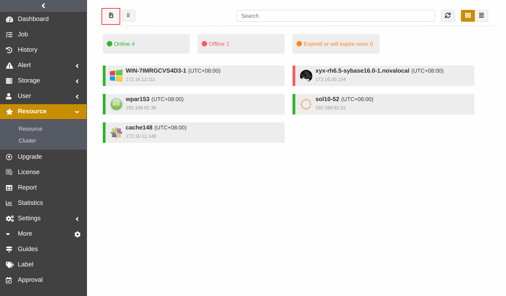
Install and Configure Agent on Windows#
Download Installation Package#
Select Windows and click Download Windows agent to download the package.
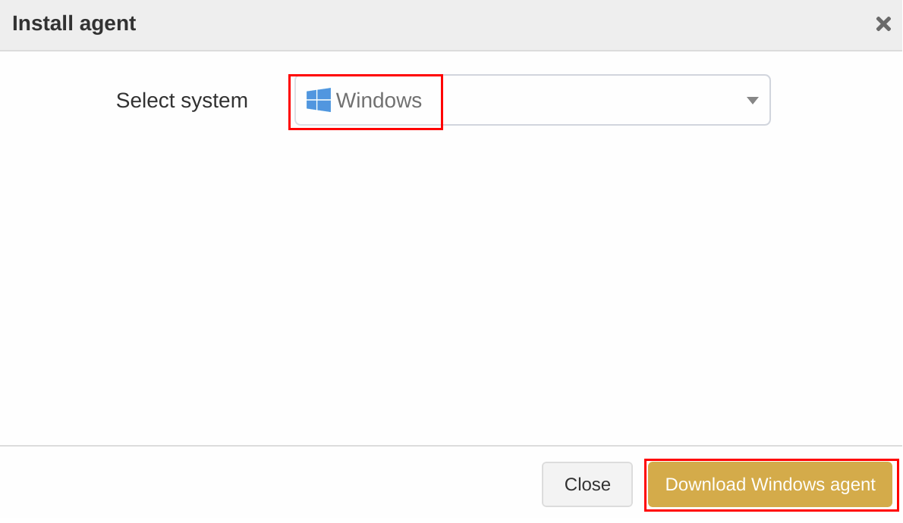
Install Agent on Windows#
Upload the installation package to the target host.
Double-click the package to install it according to the setup wizard and click Next.
This installation package selects the database resources, files, or applications installed on the host by default. Select the Sybase component and click Next.
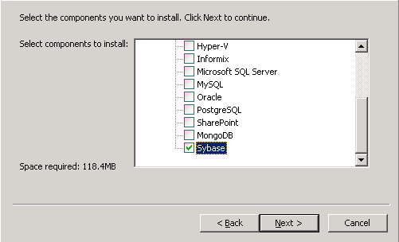
Set the Backup Server Host, Backup Server Port, and Access Key. Click Next.

Select Destination Folder and click Next to install the software. Wait for the installation to complete.
Install and Configure Agent on Linux#
Select Linux as the system and Sybase as the module. Copy an installation command.
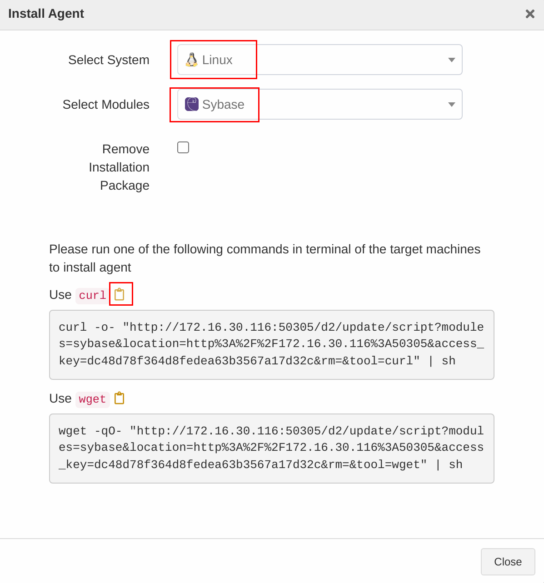
Paste the command on the command line and press Enter to execute the installation.
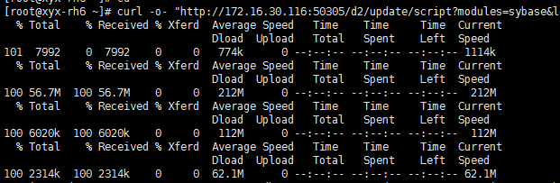
Check Successful Installation#
After the successful installation, you can log in to ADPS as the admin and see that the host is on the Resource list.
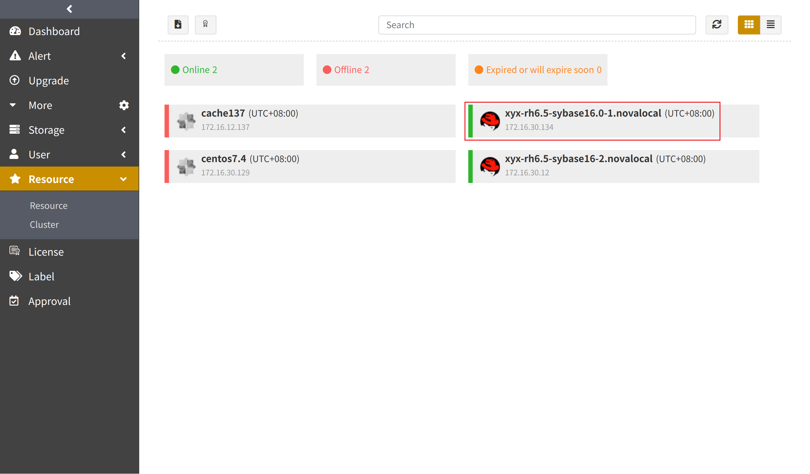
Before You Begin#
Check Database State#
Check the Sybase service state. The Sybase database service should be in the “Started” state for backup and restore.
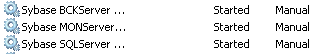
Check Resource#
Log in to ADPS as the operator and go to Resource. You can see the activated and authorized resource with an “Online” state on the list. If the resource is not present, please refer to Activate License and Assign Authorization.
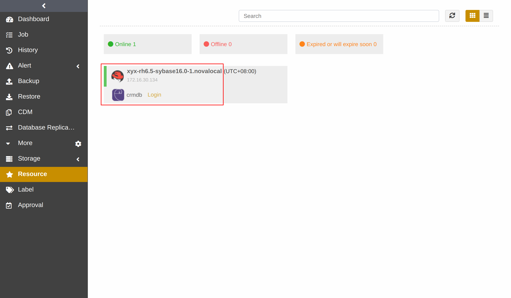
Check Storage Pool#
Log in to ADPS as the operator, go to Storage Pool, and verify a storage pool is available. If a storage pool is not present, please contact the admin to create one and assign permissions to the operator.
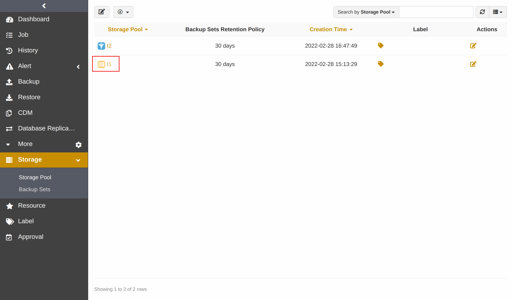
First Time Login#
Before creating the first Sybase backup and restore, go to Resource and log in to Sybase.

Sybase supports the login by database authentication.
Database authentication: The Sybase instance requires using sa account. If your Sybase password changes, you must log in to the instance again; if not, the job will fail.
Select Authentication, fill in User / Password, and click Login.
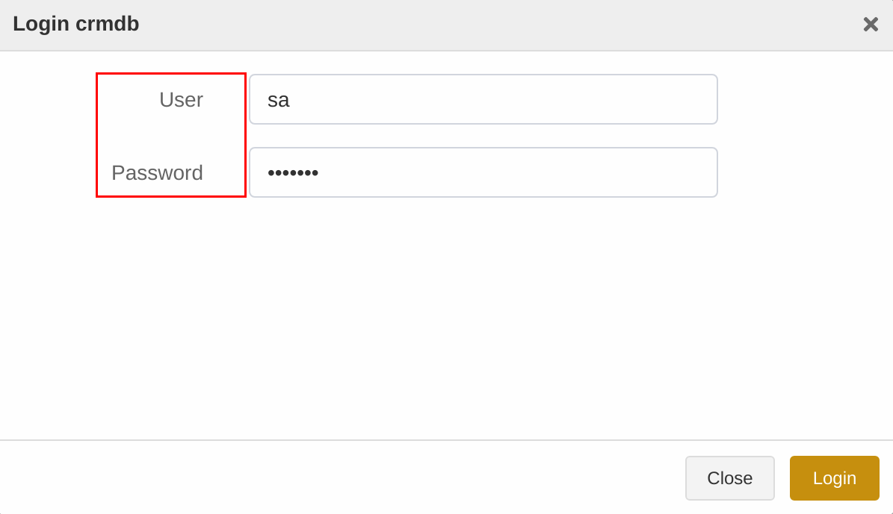
Create Backup Jobs#
This chapter introduces how to back up the Sybase databases.
Prerequisites#
You have installed the agent. For installation, please refer to Install and Configure Agent.
You have activated the agent and assigned the authorization. For details, please see Activate License and Assign Authorization.
Log in to ADPS as the operator.
Create Full Backup Jobs#
(1) Click Backup. Select the Sybase host and instance.
(2) Select Full Backup as the backup type and choose the databases. You can back up System databases and User databases.
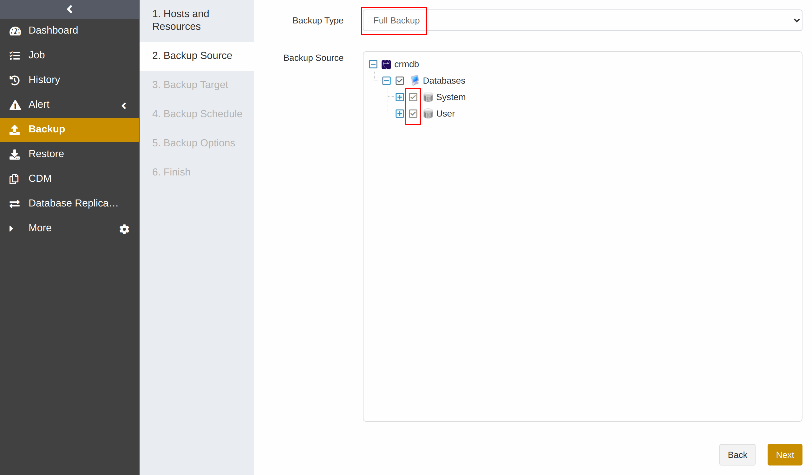
(3) Select Backup Target. You can select a standard storage pool, de-duplication storage pool, tape library pool, object storage service pool and LAN-Free pool.
Note:
It is not supported to store full backups and log backups in different storage pools.
(4) Go to Backup Schedule to set the execution time of the backup job. For details, please refer to Backup Schedule Operation. It is recommended to run a full backup on a weekly basis.
(5) Set Backup Options, including common options and advanced options.
Common options:
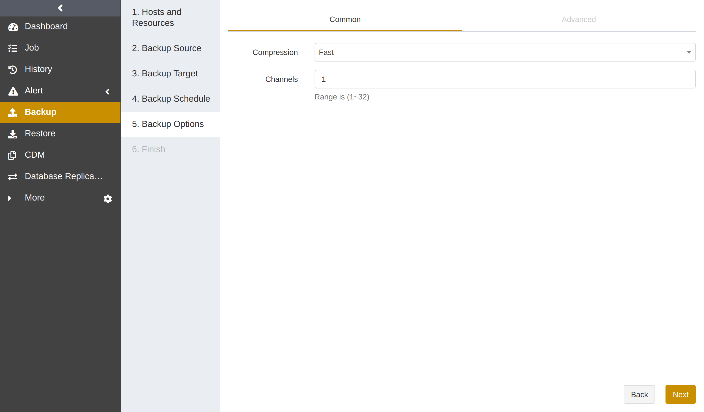
Compression: Fast is enabled by default.
None: No data compression during the backup.
Tunable: You can customize the Compression Level, which requires the activation of the advanced features.
Fast: Use the fast compression algorithms during the backup.
Channels: Used to improve backup efficiency. The default value is 1 and the range is 1 to 32. For details, please refer to Channel Number Configuration.
Advanced options:
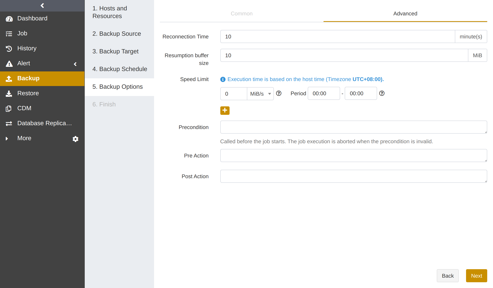
Reconnection time: The job continues after the abnormal reset occurs in the network within the set time. The value can be 1 to 60. The unit is minute(s).
Speed limit: Set the limit for data transfer speed or disk read and write speed. The unit can be MiB/s or KiB/s. Click the ‘’+‘’ icon to add limits at different times.
Precondition: The precondition is checked before the job starts. The job execution is aborted when the precondition is invalid.
Pre/Post action: The pre action is executed after the job starts and before the resource is backed up or restored. The post action is executed after the resource is backed up or restored.
(6) Set Job Name, check whether the job information is correct, and click Submit.
Create Log Backup Jobs#
Based on periodic full backups, you can add frequent log backups only to back up the transaction logs of the databases separately. The appropriate log backup frequency depends on the balance between your tolerance for the risk of work loss and the number of log backups you can store, manage, and potentially restore. Performing a log backup every 15 to 30 minutes may be enough. But if your business requires minimizing the work-loss risk, consider running log backups more frequently. More frequent log backups can increase the frequency of log truncation, making log files smaller.
The steps to create a log backup are similar to steps to create a full backup. Select Log as the backup type and choose the databases.
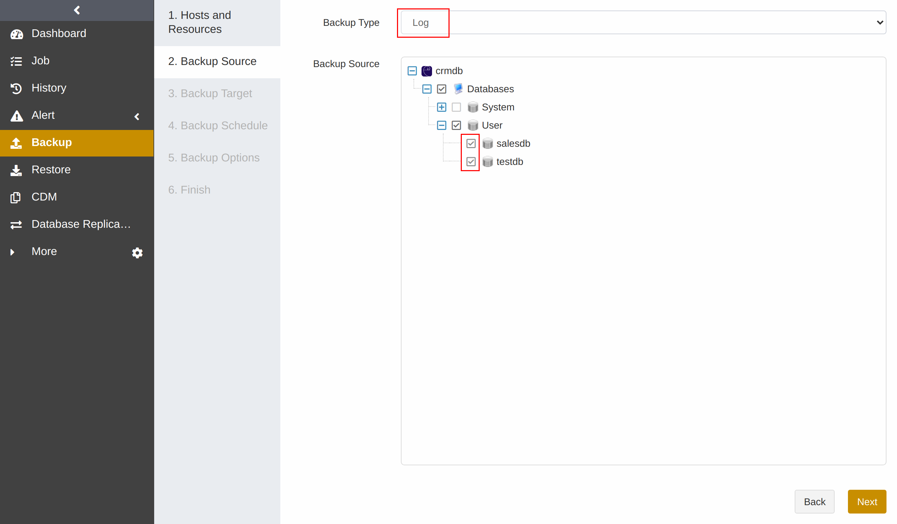
Note:
Log backups are only available for databases that meet all of the following conditions:
Data and logs are stored in separate devices.
Set the “trunc log on chkpt” database option to “false” (off/disabled).
Log backup jobs only support the backup of the User databases.
Run a Full backup job for the User databases before the first Log backup job.
A full backup job does not truncate transaction logs, while a log backup job will truncate the inactive logs after the job is executed.
To keep the database’s logs from getting full, it is recommended to set up a log backup job schedule. For the databases that do not support log backups, set the “trunc log on chkpt” database option to “true” (on/enabled), and the databases will clean up logs periodically.
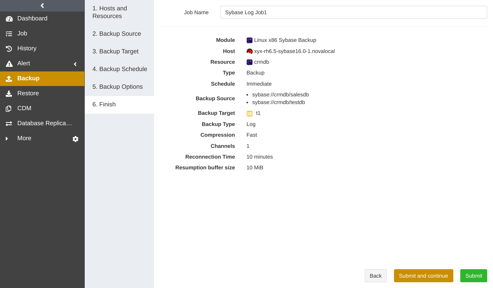
Create Restore Jobs#
This chapter introduces how to restore Sybase databases. ADPS provides two restore types based on the actual demands of users: Timepoint Restore and Recovery Testing.
Prerequisites#
A backup job has been completed. See Create Backup Jobs.
To restore to another host, it is required to install the agent on that host, activate its license, and assign the authorization.
Create Timepoint Restore Jobs#
When a logical error or a disaster occurs in a Sybase database, timepoint restore allows you to restore the database to a specified point-in-time state.
(1) Select the Sybase database host and instance, and click Next.
(2) Select Timepoint Restore as the restore type, and select the Database. The System databases can only be restored to the full backup state, while the User databases can be restored to a specific point-in-time state. Click Next.
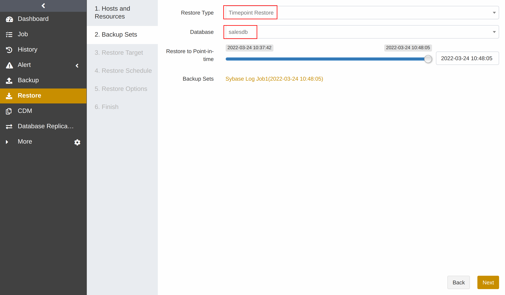
Restore to Point-in-time: You can select a backup set by clicking the time displayed next to the Restore to Point-in-time option, and specify a point in time by dragging the slider control.
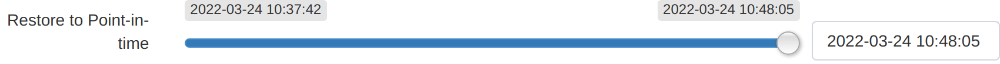
(3) Set Restore Target. The restore target can be the source host or a different host. Click Next.
Source host: The Restore Target page selects the source host and Sybase databases by default.
Different host: On Restore Target page, you can select a different host. Restoring to a different host requires the same version or from an old version to a new version.
(4) Set Restore Schedule. Timepoint restore only supports immediate and one-time restore schedules.
(5) Set Restore Options. If you leave Restore Database option empty, the restore job will overwrite the original databases. Set advanced options, including reconnection time, speed limit, precondition, and pre/post action according to your needs.
(6) Confirm the job information and click Submit.
Note:
When you restore to a new database, one or more new device files will be created for the restore job. Before you run a restore job, ensure that the number of existing devices in the database does not exceed the upper limit.
Create Recovery Testing Jobs#
With the hourly, daily, weekly, or monthly schedule, you can use recovery testing to restore the latest Sybase backup set to another instance on the source host or a different host and to check the backup set’s availability.
(1) Select Sybase database host and instance. Click Next.
(2) Select Recovery Testing as the restore type, and select the Database. The Backup Sets page does not have the Backup Sets and Restore to a Point in time options, because the recovery testing job will recover the selected host to the latest backup set state of the original instance.
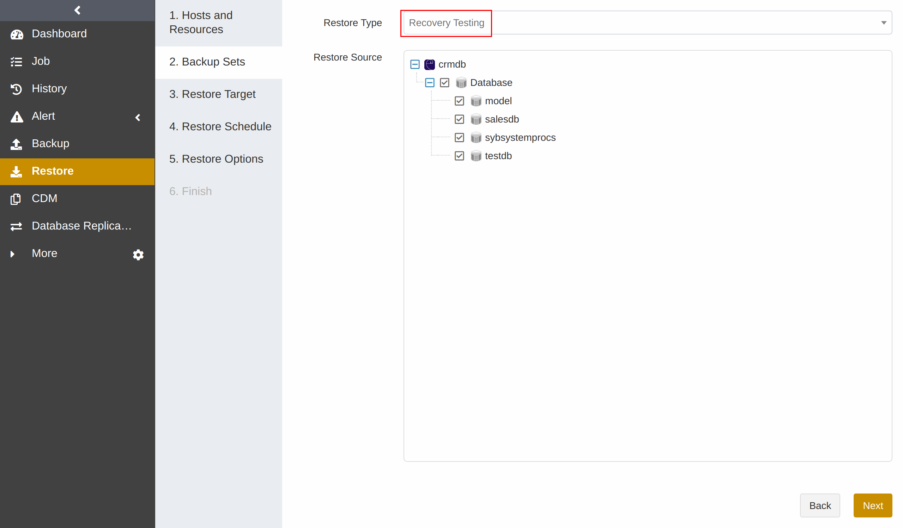
(3) Set Restore Target. You can select another instance on the source host or a different host as the restore target. Click Next.
(4) Set Restore Schedule. It supports hourly, daily, weekly, and monthly schedules. Click Next.
(5) Set Restore Options, including reconnection time, speed limit, pre action and post action. Click Next.
(6) Confirm the job information and click Submit.
(7) Wait for the job to be executed.
Manage Jobs#
On the Job page, you can view the backup and restore job information of all agents, start, modify, clone, and delete the jobs.
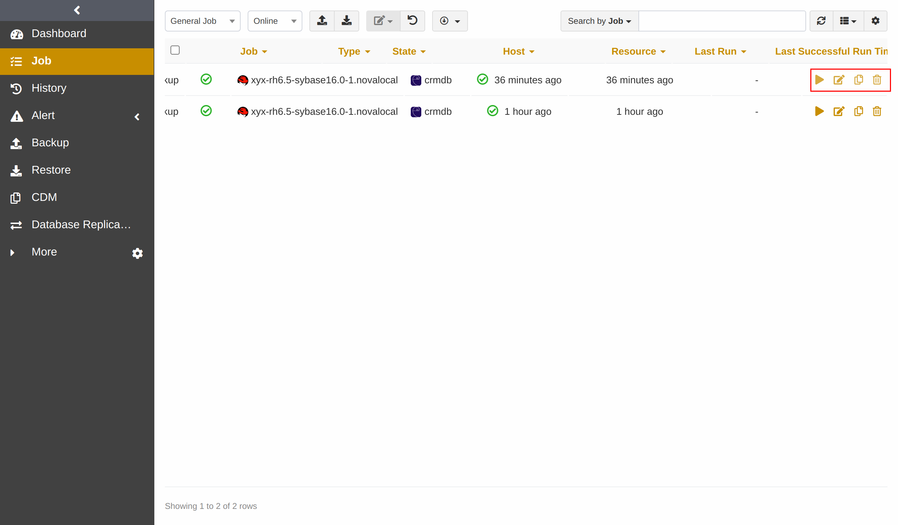
Start: Click
 to start the job immediately.
to start the job immediately.Modify: Click to modify the basic job information, the backup/restore schedule, and the backup/restore options.
Clone: Click to create multiple similar backup jobs.
Delete: Click to access the confirmation window. Click OK to delete the job.
Backup Protection Strategy#
Backup Schedule Operation#
ADPS provides six types of backup schedules. The schedule type selected is only valid for the currently created job.
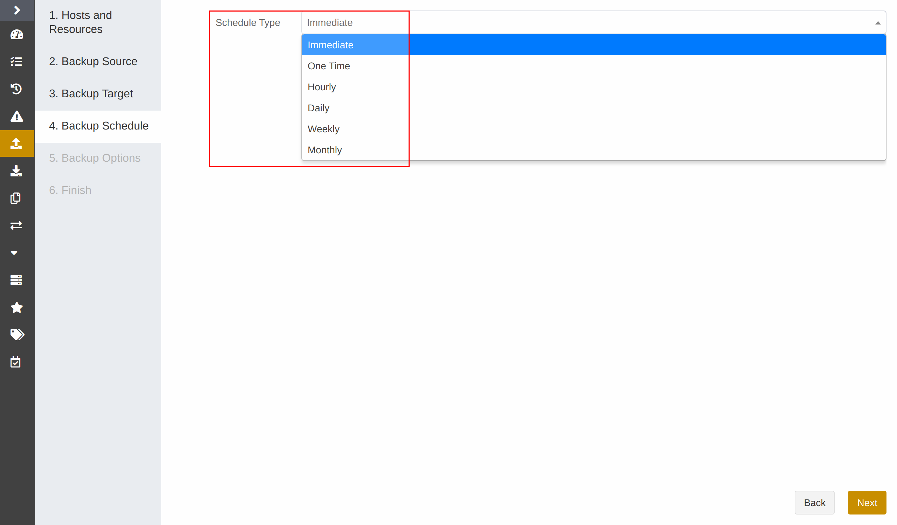
Immediate: The job immediately starts to run after it is submitted.
One time: After the job is created, it will be in an idle state and start to run when the specified Start time is reached.
Hourly: After the job is created, the first run will be initiated at the specified Start Time. The next run will be executed after a specified number of hours/minutes within the time range according to the setting. If the unit is Hour, then you can set the value from 1 to 24. If you select the Minute as the unit, then you can set the value from 1 to 60.
Daily: After the job is created, the first run will be initiated at the specified Start Time. The next run will be executed after a specified number of days according to the setting. The value is an integer between 1 and 5.
Weekly: After the job is created, the first run will be initiated at the specified Start Time. The next run will be executed after a specified number of weeks according to the setting. You can specify which day of the week to run the job.
Monthly: The job runs on the specified days of some months at the specified time. For example, you can set the job to run on January 1 and June 1 at 20:00. Or you can set it to run on the first Monday of every month at 20:00.
Example: Perform the job every two weeks on Friday at 18:00
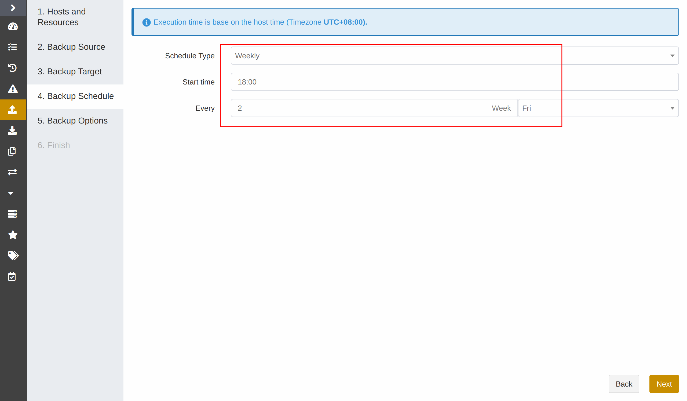
The actual execution time is:
If the current time is Friday 17:00, the run time is Friday 18:00 (the current day).
If the current time is Thursday 17:00, the run time is Friday 18:00 (the next day).
If the current time is Saturday 17:00, the run time will be next Friday 18:00.
After the first run is completed, the job will start automatically at 18:00 on Friday every two weeks.
Backup Strategy Advice#
ADPS offers two Sybase backup types: full backup and log backup. Full backup and log backup can be used together. It is recommended to formulate the following backup strategy according to different situations such as network bandwidth, business data volume, security requirements, and the amount of lost data that you can tolerate.
When the application traffic is relatively small, run a Full Backup once a week to ensure that you have at least one recoverable RTO every week.
If the database supports log backups, you can run a Log Backup every few hours to ensure that the restore granularity RPO can reach the second level. For example, you can run a log backup every 2 hours.
Note:
Avoid using the strategies of all full backups or a full backup followed by log backups.
Channel Number Configuration#
Description of Channel number for backup jobs
Sybase supports up to 32 channels. You can set the Channel number for backup and restore jobs according to the actual environment. A reasonable number can improve job performance. The Channel number is generally recommended to be the same as that of CPU cores. The efficiency improvement will not be obvious if the Channel number exceeds that of CPU cores.
Description of Channel number for restore jobs
The channel number for a restore job is the same as that for the backup job. The restore page does not show the Channels option by default.
Glossary#
Term |
Description |
|---|---|
Fast compression |
Compress data during the backup using fast compression algorithms. |
Log truncation |
Log truncation automatically frees space in the log for reuse by the transaction logs. Log truncation removes inactive virtual log files from the logical transaction logs of the Sybase databases, freeing up the space in the logical logs so that the physical transaction logs can reuse. |
Device |
A database device stores the objects that make up databases. To create Sybase databases, you need to initialize database devices and specify the storage partition to store databases. |